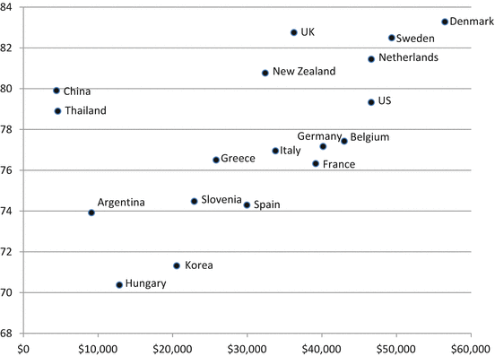

4.1 Cross Country Comparison of Standardized EQ-5D Data
EQ VAS ratings and the rate of self-reported problems on the five dimensions within specific age groups were seen to be variable between countries in Chap. 3. However, when aggregate measures of self-assessed health are compared between countries, it is necessary to adjust for potential differences in demographics. As gender was shown to play a small role in explaining EQ-5D data, the standardization took into account age differences across countries.
Table 4.1 presents mean EQ-5D data for 18 countries with national representative population surveys where demographic characteristics were standardized based on a European population structure. Note that the data presented in Table 4.1 do not represent the actual situation in each country, but are based on the European age distribution. Because the age structure superimposed on the dataset was the same for each country, comparisons between countries can be made. When comparing Table 4.1 with the non-standardized EQ VAS ratings (Table 3.1, column for total) and 5D reported problems (Table 3.3), the results show the impact of age standardization of population norms, that are usually within a few percentage score difference.
Table 4.1
Self-reported EQ-5D results after age standardization (mean VAS and proportions of any problem)
EQ VAS | Mobility | Self-care | Usual activity | Pain/discomfort | Anxiety/depression | |
|---|---|---|---|---|---|---|
Argentina | 73.92 | 0.133 | 0.037 | 0.098 | 0.339 | 0.238 |
Belgium | 77.42 | 0.139 | 0.048 | 0.129 | 0.294 | 0.061 |
China | 79.91 | 0.061 | 0.034 | 0.061 | 0.115 | 0.092 |
Denmark | 83.28 | 0.115 | 0.028 | 0.186 | 0.370 | 0.162 |
France | 76.32 | 0.144 | 0.046 | 0.107 | 0.358 | 0.145 |
Germany | 77.16 | 0.172 | 0.031 | 0.105 | 0.278 | 0.045 |
Greece | 76.50 | 0.172 | 0.083 | 0.137 | 0.204 | 0.112 |
Hungary | 70.37 | 0.209 | 0.072 | 0.158 | 0.404 | 0.362 |
Italy | 76.95 | 0.123 | 0.044 | 0.111 | 0.277 | 0.092 |
Korea | 71.31 | 0.065 | 0.010 | 0.046 | 0.296 | 0.229 |
Netherlands | 81.44 | 0.118 | 0.035 | 0.125 | 0.326 | 0.032 |
New Zealand | 80.76 | 0.192 | 0.043 | 0.208 | 0.393 | 0.212 |
Slovenia | 74.47 | 0.347 | 0.167 | 0.365 | 0.510 | 0.380 |
Spain | 74.29 | 0.127 | 0.040 | 0.110 | 0.213 | 0.073 |
Sweden | 82.49 | 0.113 | 0.025 | 0.096 | 0.425 | 0.264 |
Thailand | 78.90 | 0.298 | 0.092 | 0.259 | 0.652 | 0.470 |
United Kingdom | 82.75 | 0.182 | 0.043 | 0.162 | 0.331 | 0.209 |
US | 79.33 | 0.193 | 0.037 | 0.183 | 0.480 | 0.224 |
As can be seen in Table 4.1, the data show that important differences exist in EQ-5D population data across countries after taking into account differences in population structure. Mean EQ VAS score varied from 70.37 to 83.28 in the total population. The largest difference between any two countries in reporting problems were 28.6, 12.7, 31.9, 53.7, and 43.8 % in absolute terms along the five dimensions, respectively.
Hungary reported the lowest EQ VAS ratings, followed by Korea, while Denmark and the United Kingdom reported the highest EQ VAS ratings. The highest proportion of problems on the 5 EQ-5D dimensions was reported by Slovenia and Thailand. Note that while Hungary and Korea reported a lower mean EQ VAS than Slovenia and Thailand, more problems were reported in Slovenia and Thailand across the 5 EQ-5D dimensions. At the other end of the spectrum, China reported the lowest proportion of problems but reported average EQ VAS ratings, while Denmark and the UK reported the highest EQ VAS ratings and average proportions of problems. These results indicate that countries also differed in how they answered the more general EQ VAS question relative to how they answered the more specific questions on the EQ-5D dimensions.
4.2 The Impact of Economic and Health Care Indicators
After seeing that differences in EQ-5D data across countries exist after standardization for population structure, this section examines whether these patterns can be explained by differences in living standards and health care system performance. In addition, we explored whether macro-economic variables are correlated with EQ VAS ratings and the prevalence of problems in different age groups across countries.
Table 4.2 gives an overview of Spearman rank correlation coefficients between EQ VAS ratings and self-reported health problems on EQ-5D dimensions, and indicators of living standards and health care system performance in the 18 countries. Correlations are presented for different age groups and for all age groups combined.
Table 4.2
Spearman rank correlations between indicators of living standards and self-reported health
Age group | GDP per capita | Unemployment rate | Health expenditure (% of GDP) | Health expenditure per capita | Physicians per 1,000 people | |
|---|---|---|---|---|---|---|
EQ-VAS | 18–24 | 0.38 | −0.12 | 0.29 | 0.40 | 0.09 |
25–34 | 0.55*
| −0.06 | 0.44 | 0.53*
| 0.32 | |
35–44 | 0.50*
| −0.26 | 0.35 | 0.47 | 0.18 | |
45–54 | 0.49*
| −0.50*
| 0.29 | 0.48* | −0.13 | |
55–64 | 0.45 | −0.50*
| 0.26 | 0.45 | −0.25 | |
65–74 | 0.47 | −0.48*
| 0.20 | 0.44 | −0.21 | |
75+ | 0.42 | −0.51*
| 0.17 | 0.37 | −0.24 | |
Total | 0.58*
| −0.35 | 0.39 | 0.55*
| −0.03 |
EQ-5D dimension | Age group | GDP per capita | Unemployment rate | Health expenditure (% of GDP) | Health expenditure per capita | Physicians per 1,000 people |
|---|---|---|---|---|---|---|
Mobility | 18–24 | 0.20 | −0.24 | 0.28 | 0.21 | −0.38 |
25–34 | 0.11 | −0.21 | 0.16 | 0.14 | −0.43 | |
35–44 | −0.09 | 0.11 | 0.10 | −0.03 | −0.33 | |
45–54 | 0.01 | 0.03 | 0.08 | 0.00 | −0.23 | |
55–64 | −0.38 | 0.05 | −0.11 | −0.32 | −0.22 | |
65–74 | −0.32 | 0.07 | −0.11 | −0.27 | −0.24 | |
75+ | −0.11 | 0.08 | −0.10 | −0.13 | −0.01 | |
Total | −0.19 | 0.14 | 0.04 | −0.13 | −0.27 | |
Self-care | 18–24 | −0.21 | −0.32 | −0.15 | −0.18 | −0.30 |
25–34 | 0.09 | −0.20 | 0.10 | 0.11 | −0.37 | |
35–44 | −0.33 | 0.36 | −0.03 | −0.25 | −0.20 | |
45–54 | 0.01 | −0.04 | 0.02 | −0.02 | −0.26 | |
55–64 | −0.48*
| 0.24 | −0.25 | −0.42 | −0.26 | |
65–74 | −0.50*
| 0.09 | −0.26 | −0.47*
| −0.17 | |
75+ | −0.25 | 0.51*
| −0.14 | −0.31 | 0.44 | |
Total | −0.35 | 0.26 | −0.14 | −0.35 | −0.05 | |
Usual activities | 18–24 | 0.34 | −0.29 | 0.31 | 0.37 | −0.34 |
25–34 | 0.33 | −0.26 | 0.28 | 0.34 | −0.32 | |
35–44 | 0.23 | −0.16 | 0.24 | 0.25 | −0.32 | |
45–54 | 0.23 | −0.09 | 0.13 | 0.22 | −0.27 | |
55–64 | −0.18 | 0.12 | −0.03 | −0.14 | −0.17 | |
65–74 | −0.15 | −0.10 | −0.05 | −0.15 | −0.25 | |
75+ | −0.13 | 0.09 | −0.13 | −0.18 | −0.05 | |
Total | 0.08 | −0.03 | 0.13 | 0.09 | −0.24 | |
Pain/discomfort | 18–24 | 0.34 | −0.18 | 0.26 | 0.37 | −0.27 |
25–34 | 0.32 | −0.17 | 0.23 | 0.32 | −0.21 | |
35–44 | 0.26 | 0.01 | 0.15 | 0.27 | −0.21 | |
45–54 | 0.16 | −0.05 | 0.05 | 0.17 | −0.28 | |
55–64 | −0.04 | −0.13 | −0.17 | −0.04 | −0.38 | |
65–74 | −0.16 | −0.21 | −0.24 | −0.14 | −0.51*
| |
75+ | −0.20 | −0.16 | −0.30 | −0.18 | −0.44 | |
Total | 0.10 | −0.11 | −0.01 | 0.12 | −0.38 | |
Anxiety/depression | 18–24 | −0.01 | −0.08 | −0.17 | 0.00 | −0.36 |
25–34 | −0.24 | 0.01 | −0.30 | −0.22 | −0.47 | |
35–44 | −0.30 | 0.10 | −0.37 | −0.28 | −0.42 | |
45–54 | −0.30 | 0.07 | −0.41 | −0.30 | −0.40 | |
55–64 | −0.43 | −0.07 | −0.56*
| −0.44 | −0.47*
| |
65–74 | −0.53*
| −0.08 | −0.60**
| −0.52*
| −0.54*
| |
75+ | −0.51*
| −0.25 | −0.68**
| −0.52*
| −0.59**
| |
Total | −0.38 | −0.04 | −0.51*
| −0.38 | −0.46 |
The prior living standards (GDP per capita) in the countries studied correlated most with the EQ VAS scores (0.58), while unemployment appeared to significantly correlate in people over the age of 45 only. Health care expenditure also correlated with better EQ VAS data (0.55). Less significant results were detected between macro indicators and reported problems.
The positive relationship between living standards and self-reported EQ VAS was further examined and is graphically presented in Fig 4.1.

Fig. 4.1
Self-reported EQ VAS according to GDP* per capita in 18 countries *GDP is the total value of all goods and services produced by an economy in 1 year
As Fig 4.1 shows, EQ VAS correlated well with a country’s GDP, although China and Thailand were outliers with relatively high EQ VAS scores compared to their GDP.
Further linear regression analyses showed that GDP level explained 29 % of EQ VAS at the country level (p = 0.02), but explained 67 % of the EQ VAS when excluding ‘outliers’ China and Thailand. Health expenditure per capita was the only other statistically significant explanatory factor that explained 26 % of the country mean VAS (p = 0.03). While GPD showed a stronger correlation with VAS than health expenditure, a dollar unit of health expenditure had eight times the impact of a dollar unit of GPD on the country mean VAS scores (with coefficients of 0.0001 for GPD and 0.0008 for health expenditure). Another set of regression analyses, that used macro data from the year of EQ-5D data collection in each country on gross national income expressed in purchasing power parity in 2010 values, did not reach statistically significant results. However, health care expenditure remained a statistically significant factor (p = 0.03), explaining 27 % of variation in the country mean VAS scores.